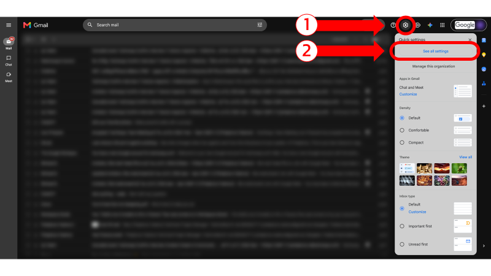
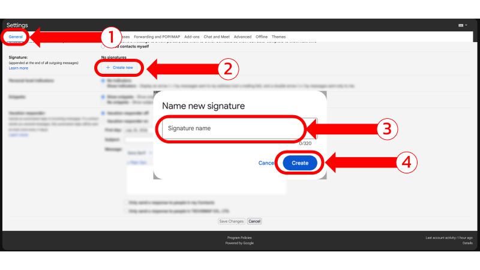
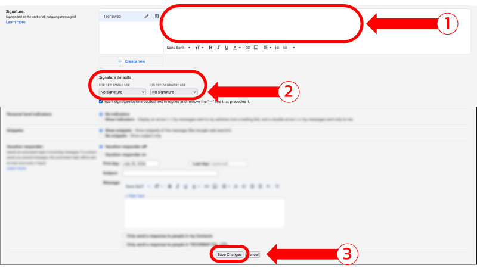
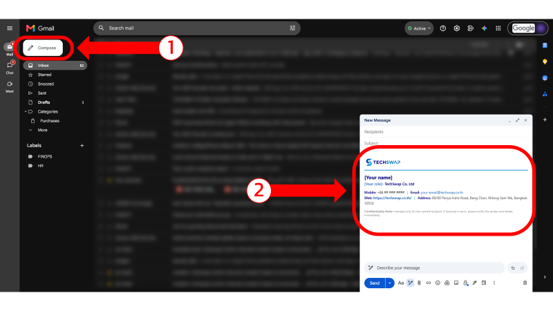

Setup guide
This guide is for configuring the TechSwap email signature in Gmail only.
Click on the Gear icon to open Quick settings, then click See all settings.

In the General tab, scroll down to the Signature section, click Create new, and name your new signature.

Paste the copied email signature, then specify the signature defaults for both New emails and On reply/forward. Finally, click Save changes.

Compose a new email and confirm that the email signature appears correctly.
